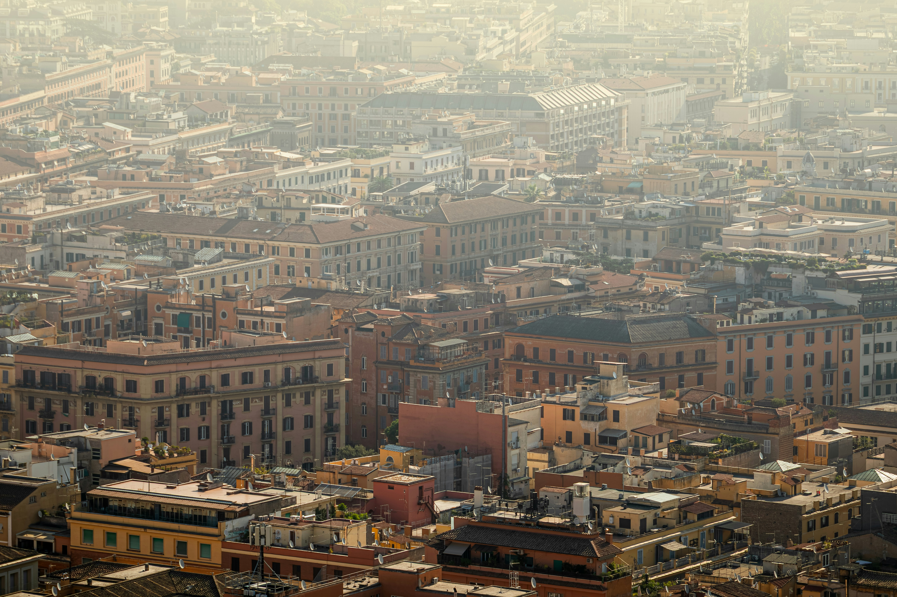

Коли їхати
Найкомфортніше — квітень–червень і вересень–жовтень: тепло, але без літньої спеки.
ВІДКРИВАЙТЕ ЄВРОПУ
Вічне місто, де античні руїни, барокові площі й затишні дворики сусідять на одній вулиці.

ВІДКРИВАЙТЕ ЄВРОПУ
Вічне місто — це не лише руїни: тут живуть квартали, ринки, кав’ярні й довгі вечори на терасах.
Найкомфортніше — квітень–червень і вересень–жовтень: тепло, але без літньої спеки.
Центр зручно обійти пішки, а на довші відстані є метро, трамваї й автобуси.
Два-три дні — для головних пам’яток, п’ять днів — щоб не поспішати.
ВІДКРИВАЙТЕ ЄВРОПУ
Подивись, як розташовані головні пам’ятки, і плануй день так, щоб не губити час на дорогу.
© учасники OpenStreetMap · Відкрити більшу карту
ВІДКРИВАЙТЕ ЄВРОПУ
Шість місць, з яких зручно почати знайомство з Римом.

Найбільший амфітеатр античності: заходь одразу на відкритті.
★ 4.8

Галереї, Сікстинська капела й величезна колекція мистецтва.
★ 4.8

Храм із величезним куполом і круглим отвором у центрі.
★ 4.8

Найвідоміший фонтан міста: приходь рано вранці або пізно ввечері.
★ 4.8

Руїни центру античного Риму й краєвиди з пагорба.
★ 4.8

Бароко, фонтани й вуличні кав’ярні для повільного вечора.
★ 4.8
ВІДКРИВАЙТЕ ЄВРОПУ
Прості поради, щоб поїздка була комфортнішою й ближчою до місцевого ритму.

Обирай невеликі траторії у кварталах Тестаччо й Трастевере.
★ 4.8

Парк із галереями й озером для тихої перерви між пам’ятками.
★ 4.8

Вузькі вулички, кав’ярні й живий вечірній настрій.
★ 4.8
ВІДКРИВАЙТЕ ЄВРОПУ
Обери готову основу й адаптуй її під свій темп.

Колізей → Форум → Пантеон · 1 день
★ 4.8

Ватикан → Навона → Трастевере · 3 дні
★ 4.8

Вілла Боргезе → Аппієва дорога → Тестаччо · 5 днів
★ 4.8
ТВІЙ МАРШРУТ · ТВОЇ ПРАВИЛА
Обери пам’ятки, темп і кількість днів — і отримай план, який відчувається особистим.
Створити маршрут